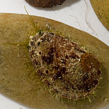
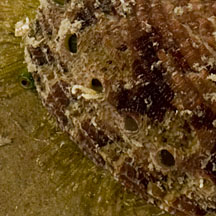
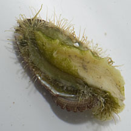
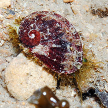
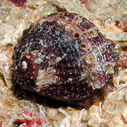
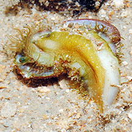
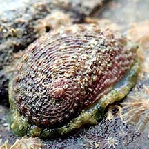
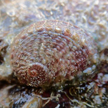
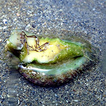

|
|
| shelled snails text index | photo index |
| Phylum Mollusca > Class Gastropoda > Family Turbinidae |
| Abalone Family Haliotidae updated Aug 2020 Where seen? Small ones are sometimes seen on our undisturbed reefs, under rocks and rubble. Features: 4-7cm long, the shell resembles a limpet, flat semi-spherical oval, resembles an ear especially from the underside. There are 5-10 small holes on the upper edge of the shell. The animal has a large fleshy foot edged with fine tentacles, and lacks an operculum. It has large eyes on short stalks, and a pair of long tentacles. The inside of the shell is shiny and pearly, the outside is often well camouflaged with encrustations. Sometimes confused with limpets. |
 Terumbu Pempang Kecil, Jun 13 |
 A row of holes at the top of the shell. |
 Large foot. |
 Big Sisters Island, Dec 12 |
 Photo shared by Loh Kok Sheng on flickr. |
 |
| Human uses: Temperate climate
species grow much larger than tropical species, and are harvested
for their shell, used for shell crafts, and the animal is eaten as
a delicacy in Asia. Due to the high value of the animal in the food
trade, even smaller tropical species are threatened with over collection. Status and threats: Some of our Abalone species are listed as 'Endangered' on the Red List of threatened animals of Singapore. Due to the loss of natural rocky shores with crevices where they thrive. Seawalls do not appear to be a viable alternative habitat for this animal. |
| Abalones on Singapore shores |
On wildsingapore
flickr
|
| Other sightings on Singapore shores |
 Lazarus island, Feb 21 Photo shared by Jianlin Liu on facebook. |
 Pulau Semakau East, Jul 2018 |
 Photo shared by Jianlin Liu on facebook. |
| Family
Haliotidae recorded for Singapore from Tan Siong Kiat and Henrietta P. M. Woo, 2010 Preliminary Checklist of The Molluscs of Singapore. ^from WORMS.
|
|
Links
References
|